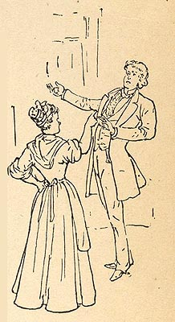

|
 An
interesting theme in Pudd'nhead Wilson is that
slaves' behavior is a kind of pose. The first time we meet
Roxy, for example, we learn not only that she looks as
"white" as any of the white citizens of Dawson's Landing,
but also that she has "an independent carriage" among her
own "caste," although "of course she was meek and humble
where white people were." Similarly when she asks Tom for
help after losing her savings, she "approache[s] her son
with all the wheedling and supplicating servilities that
fear and interest can impart to the words and attitudes of
the born slave." That this is an act, a pose rather
than an essential consequence of slavery, becomes clear
when Tom scorns her request. The picture here illustrates
this text: "Roxy's head was down, in an attitude of humility. But now the fires of her old wrongs flamed up in her breast and began to burn fiercely. She raised her head slowly, till it was well up, and at the same time her great frame unconsciously assumed an erect and masterful attitude, with all the majesty and grace of her vanished youth in it." The Barrett Collection, UVA PS 1317 .A1 1894 |